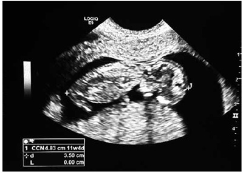
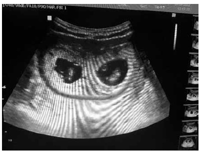
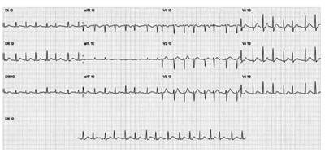
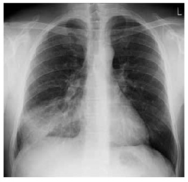
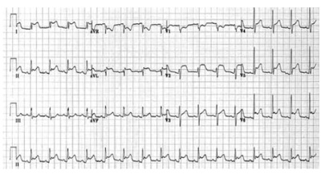
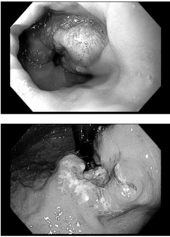
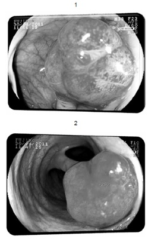

Questão 1 · Pediatria · Amamentação Aleitamento Materno · 4000181320Em relação ao aleitamento materno, é correto afirmar que
A por ser considerado fundamental, é considerado uma questão de especialistas pelo SUS.
B já foi considerado mais importante quando não havia leite artifical de boa qualidade.
C é desejável que o aleitamento materno seja o único alimento da criança até os 6 meses de idade.
D que o uso da chupeta interfere positivamente na continuidade do aleitamento materno.
E os estudos mostram que o alimento complementar ao aleitamento materno a partir dos 2 meses de vida aumenta a capacidade imunológica da criança.
Questão 2 · Medicina Preventiva · 4000181319Assinale a alternativa correta sobre a pandemia de covid-19.
A Foi a primeira pandemia enfrentada neste século.
B Teve seu fim anunciado pela Organização Mundial da Saúde em março de 2022.
C Foi resultado de um acidente ocorrido em laboratório na China.
D Há uma subnotificação de infectados em vários países incluindo o Brasil.
E Seus impactos foram igualmente devastadores para todas as pessoas no mundo.
Questão 3 · Medicina Preventiva · 4000181318Uma professora trabalha há 20 anos em duas escolas da rede de ensino fundamental de um município de grande porte. As salas de ambas as escolas têm mais de 40 alunos, sem tratamento acústico e ela tem que falar alto para dar aula. Sente-se sobrecarregada pelas inúmeras atividades além das aulas, desde o preparo até o acompanhamento dos alunos e correção das tarefas e provas. Sente-se sempre devendo alguma coisa para os alunos e para as escolas. Começa a apresentar rouquidão, cansaço e desânimo. Tem o diagnóstico de depressão e distúrbio da voz associado ao desgaste pelo uso excessivo. Com base nesse quadro, é correto afirmar que
A a depressão é comum entre os professores, mas a alteração da voz só é considerada relacionada ao trabalho se houver calo nas cordas vocais.
B ambos os diagnósticos só poderão ser relacionados ao trabalho se forem descartadas quaisquer outras causas.
C ambos os quadros de saúde provavelmente têm relação com aspectos de sua atividade de trabalho.
D a depressão pode ter relação com a atividade de trabalho, mas a alteração da voz não.
E nenhum dos diagnósticos pode ser relacionado ao trabalho, pois são doenças que acometem quaisquer pessoas.
Questão 4 · Reações adversas vacinais · 4000181317Assinale a alternativa correta sobre vacinação.
A O Sistema Nacional de Vigilância Epidemiológica dos Eventos Adversos Pós-Vacinação foi instalado no Brasil com o advento da covid-19.
B Os protocolos e definições sobre os eventos adversos são definidos em cada país, o que dificulta comparações.
C Os efeitos adversos de uma vacina devem ser sempre relatados a hospitais e não em unidades básicas de saúde.
D Evento adverso pós-vacinação (EAPV) é qualquer ocorrência médica indesejada após a vacinação e que tenha relação causal com o uso de uma vacina.
E As vacinas pertencem a um dos grupos de produtos biológicos com excelente perfil de segurança.
Questão 5 · Medicina Preventiva · 4000181316Assinale a alternativa que apresenta corretamente uma das características sobre o Sistema de Informação sobre Mortalidade (SIM).
A Inclui as mortes maternas, desde que sejam decorrentes de negligência médica.
B Tem potencial para fornecer dados sobre mortes por acidente de trabalho.
C É alimentado por prontuários médicos de unidades de saúde.
D Exclui as mortes por causas externas.
E É um sistema de fácil manutenção, mas pouco utilizado pelo SUS.
Questão 6 · Medicina Preventiva · 4000181315Em relação às doenças consideradas negligenciadas pela Organização Mundial da Saúde, é correto afirmar que
A são doenças raras cuja evolução costuma ser benigna.
B não há registro dessas doenças no Brasil.
C são endêmicas nas populações pobres da África, Ásia e América Latina.
D são assim chamadas, pois seriam erradicadas com vacinação em massa.
E são doenças crônicas de pouca repercussão clínica e baixa incapacidade.
Questão 7 · Medicina Preventiva · 4000181314Sobre a imunidade coletiva, é correto afirmar que
A a probabilidade de contágio em uma população diminui quando aumenta, nessa população, a proporção entre imunes e suscetíveis.
B a expectativa em uma epidemia é que se obtenha a imunidade coletiva de modo natural.
C a vacinação rápida em uma epidemia atrapalha a obtenção da imunidade coletiva.
D o fato de haver pessoas imunes a uma doença sem que seja decorrente da infecção ou de vacinação impede a imunidade coletiva.
E a imunidade coletiva é obtida sempre que a vacinação atinge 80% das pessoas suscetíveis à determinada doença.
Questão 8 · Medicina Preventiva · 4000181313Uma paciente de 63 anos tem diagnóstico de como pedreiro e com a nora, que trabalha como técnica de enfermagem em um hospital. Assinale a alternativa que apresenta o procedimento correto em relação a esse quadro.
A A paciente deve ir à UBS nos horários definidos pelo médico para receber a insulina.
B O filho é a pessoa mais indicada para aplicar a insulina na paciente, pelo vínculo afetivo.
C A nora, que é profissional de saúde, deve aplicar a insulina na paciente.
D A equipe de atenção domiciliar deve aplicar a insulina na paciente.
E A equipe de saúde deve incentivar a paciente e capacitá- la a fazer uso da insulina em casa.
Questão 9 · Medicina Preventiva · 4000181312Com o advento da transição epidemiológica, as doenças crônicas não transmissíveis (DCNT) tornaram-se progressivamente mais prevalentes ao longo do último século, e representam hoje a maior carga de doença no Brasil e no mundo. Sobre essa questão, assinale a alternativa que apresenta a afirmação correta.
A As DCNT têm como causas hábitos disseminados na população, entre os quais o tabagismo, que será controlado quando houver penalidades para os tabagistas.
B A carga global de doenças é um indicador pouco significativo em países como o Brasil.
C A inevitabilidade das incapacidades provocadas pelas DCNT exige a priorização da criação de uma rede de centros de reabilitação regionalizados no SUS.
D Os principais integrantes das DCNT são as cardiovasculares, as neoplasias e o diabetes mellitus.
E O peso das DCNT na carga de doença tende a cair devido ao advento de doenças infecciosas, em especial, as pandêmicas.
Questão 10 · Depressão · Tabaco · 4000181311Uma mulher de 42 anos apresenta quadro de depressão associada à morte de sua lha de 15 anos há 1 ano. É acompanhada pela equipe de saúde de uma UBS, que identi ca vários aspectos de sua vida que interferem em sua saúde, entre os quais o fato de que ela é tabagista há 20 anos, tem di culdades nanceiras e tem um lho adolescente usuário de drogas. Em decorrência disso,
A é fundamental que a equipe de saúde invista na cessação tabágica da paciente estabelecendo metas por períodos definidos conjuntamente.
B a equipe de saúde deve analisar junto com a paciente suas necessidades, levando em conta sua história e condições de vida.
C provavelmente, a paciente se beneficiaria com a estratégia de criação de tarefas e cronogramas para o combate à depressão.
D a equipe de saúde deve estabelecer quais são as prioridades da paciente e cumprir as etapas necessárias para auxiliar a paciente.
E a equipe de saúde deve estabelecer o que está ao seu alcance, restringindo-se ao tratamento medicamentoso da depressão e à cessação tabágica.
Revisar: possível letra faltando em enunciado
Questão 11 · Cardiologia · 4000181310Os brasileiros consomem quase o dobro da recomendação diária de sódio trazida pela Organização Mundial da Saúde (OMS). Há diferentes fontes de sódio na dieta dos brasileiros, tais como o sal de cozinha, temperos e alimentos processados e ultraprocessados, exigindo múltiplas estratégias para a redução do consumo em nível populacional. Enquanto a participação do sal de cozinha tem reduzido ao longo do tempo, a de alimentos processados e ultraprocessados tem aumentado. Assim, as estratégias de redução do consumo de sal/sódio nas quais o Ministério da Saúde tem papel importante têm sido
A multas para os restaurantes que oferecerem alimentos com alto teor de sal/sódio.
B reformulação de alimentos processados e ultraprocessados.
C estabelecimento de metas de consumo diário de sal/ sódio para todos os adultos.
D aulas para as crianças do ensino fundamental sobre nutrição.
E monitoramento do consumo de sal/sódio de todos os adultos do país.
Questão 12 · Medicina Preventiva · 4000181309Assinale a alternativa que apresenta corretamente dois eventos de notificação compulsória imediata.
A Acidente com animal peçonhento e óbito por dengue.
B Eventos adversos graves ou óbitos pós-vacinação e hanseníase.
C Dengue e doença de Chagas crônica.
D Violência doméstica e tuberculose.
E Leptospirose e hepatite viral.
Questão 13 · Medicina Preventiva · 4000181308Trabalhadores de uma empresa metalúrgica apresentam perdas auditivas por ruído e procuram uma UBS queixando- se do ruído intenso do local de trabalho. Assinale a alternativa que apresenta o procedimento correto para esses casos.
A Os trabalhadores devem ser encaminhados ao ambulatório de especialidade de otorrinolaringologia para receber orientações.
B A perda auditiva induzida por ruído é de notificação compulsória imediata ao Sistema de Informação de Agravos de Notificação (SINAN).
C As audiometrias devem ser refeitas e apenas os casos de trabalhadores com mais de 5 anos de trabalho na empresa devem ser notificados no SINAN.
D As perdas auditivas não causam incapacidade para o trabalho e, portanto, não são de notificação no SINAN.
E Os casos devem ser notificados no SINAN e os órgãos de vigilância sanitária devem ser notificados para atuação na empresa.
Questão 14 · Medicina Preventiva · 4000181307Quanto à Emergência de Saúde Pública de Importância Internacional (ESPII), é correto afirmar que
A é evento extraordinário que constitui risco para a saúde pública de vários países por meio da propagação internacional de doenças e que potencialmente requerem uma resposta internacional coordenada.
B é evento extraordinário que constitui risco para a saúde pública pelo alto coeficiente de letalidade e atinge pelo menos dois países de cada continente, exigindo a articulação internacional para respostas harmônicas.
C é um evento que apresenta risco de propagação ou disseminação de doenças para mais de uma Unidade Federada – Estados e Distrito Federal – no Brasil, com priorização das doenças de notificação imediata e outros eventos de saúde pública.
D a ESPII deve ser declarada sempre pela Organização Mundial de Saúde (OMS) ou por um conjunto de países do mesmo continente, desde que haja risco para a saúde pública pelo alto coeficiente de letalidade e colapso dos sistemas de saúde.
E a malária deveria ser considerada ESPII pela OMS, pois atinge a Amazônia, que abrange vários países da América do Sul.
Questão 15 · Tétano · Tétano · Prevenção do tétano acidental · 4000181306Um sepultador do cemitério de uma cidade pequena, de 32 anos de idade, procura a UBS com queixa de lombalgia. A equipe de saúde verifica que sua vacinação contra tétano deve ser regularizada. Assinale a alternativa correta.
A Deve receber reforço de vacina contra difteria, tétano e pertussis (DTP) a cada 5 anos, independentemente de sua situação vacinal.
B Deve necessariamente ter 3 doses da vacina DTP sem necessidade de reforço.
C Se tiver 3 doses da vacina DTP, deve receber reforço apenas no advento de um ferimento.
D Deve tomar 3 doses da vacina contra difteria e tétano (dT) e depois reforço a cada 5 anos.
E Se tiver as 3 doses completas do esquema básico, deve tomar reforço da dT a cada 10 anos.
Questão 16 · Inf ectologia · 4000181305Um paciente do sexo masculino, de 25 anos de idade, procura a Unidade Básica de Saúde (UBS) por ter tido covid-19 em 2021 e ouviu dizer que era preciso prevenir a covid longa. Como o paciente está assintomático, o procedimento correto é
A ele deve preencher um questionário de sintomas diariamente durante 2 anos para que a equipe de saúde monitore seus eventuais sintomas de covid longa.
B ele nem precisa ser avaliado, devendo procurar um ambulatório de pneumologia em caso de sintomas.
C o paciente deve ser avaliado e acompanhado clinicamente pela UBS.
D ele deve ser encaminhado a um ambulatório de pneumologia para checar a função pulmonar.
E por se tratar de doença relativamente nova, o paciente deve ser encaminhado a um centro especializado na doença.
Questão 17 · Medicina Preventiva · 4000181304Uma epidemia atinge uma região do estado de São Paulo. Trata-se de uma doença altamente transmissível, de rápida evolução e a maioria dos casos evolui para a cura, embora alguns evoluam para óbito. Considerando um período de 30 dias, assinale a alternativa que apresenta a afirmação correta sobre essa doença.
A Trata-se de uma doença com alto coeficiente de prevalência e de letalidade.
B Seu coeficiente de incidência é alto e o de letalidade baixo.
C A doença tem alto impacto nos recursos de serviços de alta complexidade.
D O impacto sobre a saúde da população é baixo.
E O caminho mais curto para seu controle é a vacinação em massa.
Questão 18 · Medicina Preventiva · 4000181303Assinale a alternativa correta sobre a saúde do trabalhador no SUS.
A As ações em saúde do trabalhador fazem parte das atribuições do SUS.
B O SUS é universal e não há especificidade das ações em saúde do trabalhador.
C O SUS deve priorizar a saúde do trabalhador do setor da saúde.
D A vigilância em saúde do trabalhador é atribuição do SUS, sendo a assistência de responsabilidade das empresas.
E O SUS é responsável pela atenção integral à saúde dos trabalhadores, somente quando forem do mercado informal.
Questão 19 · Medicina Preventiva · 4000181302Em relação à participação da comunidade no SUS, é correto afirmar que
A sua expressão é a existência de um fórum permanente composto por representantes dos diversos segmentos sociais, incluído o Congresso Nacional.
B a participação da comunidade no SUS se concretiza na existência dos conselhos e das conferências de saúde.
C a participação da comunidade no SUS tem sido avaliada positivamente embora a tendência seja de restringi- la pelo alto custo que representa.
D a participação da comunidade no SUS é frágil, pois uma portaria do Ministério da Saúde pode alterar a composição de suas instâncias.
E para que a participação da comunidade no SUS seja efetiva, é preciso que venha a ser regulamentada legalmente.
Questão 20 · Medicina Preventiva · 4000181301Sobre o Sistema Único de Saúde (SUS), é correto afirmar que
A o SUS tem como um dos principais objetivos prestar assistência à saúde da população mais vulnerável.
B o SUS advém de um conceito inscrito na Constituição Federal de que todos os cidadãos têm direito ao atendimento de necessidades básicas de saúde.
C a Reforma Sanitária, inspiração do SUS, foi um conjunto de mudanças realizadas no sistema de saúde, que tinha por objetivo principal harmonizar os interesses públicos e privados.
D a equidade é um dos princípios doutrinários do SUS e tem relação direta com os conceitos de igualdade e de justiça.
E o SUS nunca conseguiu ser implementado em sua plenitude, pois suas atribuições extrapolam a área da saúde.
Questão 21 · Pediatria · Diagnóstico Nutricional · 4000181300Criança em fase escolar do sexo feminino, com 6 anos de idade, é atendida em uma consulta pediátrica de rotina. Após a antropometria, verifica-se, pela interpretação da curva de crescimento de referência, um peso para idade no escore-z: +2,03, estatura para idade no escore-z: +0,95 e índice de massa corporal no escore-z: +2,08. De acordo com os critérios vigentes do Ministério da Saúde, assinale a adequada classificação nutricional dessa criança.
A Peso adequado para idade e risco para sobrepeso.
B Peso adequado para idade e risco para obesidade.
C Peso elevado para idade e risco de obesidade.
D Peso elevado para idade e sobrepeso.
E Peso elevado para idade e obesidade.
Questão 22 · Ventilação com pressão positiva · 4000181299Ao atender o nascimento de um bebê, termo, com choro fraco e hipotonia após a extração num parto cesárea, conduz-se a criança ao berço de reanimação, realiza-se a secagem, o aquecimento e o posiconamento em cerca de 30 segundos e avalia-se o recém-nascido que está respirando e com frequência cardíaca, verificada com estetoscópio, de cerca de 80 batimentos/minuto. Sobre os próximos passos da reanimação neonatal, assinale a afirmativa correta.
A Deve-se instalar monitor cardíaco e oxímetro de pulso.
B Deve-se repetir os passos iniciais, aspirando as vias aéreas (boca e nariz).
C Deve-se iniciar ventilação com pressão positiva com balão e máscara, e oxigênio a 60%.
D Deve-se encaminhar a criança para mãe para a amamentação.
E Deve-se prover estímulo tátil na região dorsal do bebê.
Questão 23 · Pediatria · LaringiteLaringotraqueíte viral crupe · 4000181298Lactente do sexo masculino, com 18 meses de idade e história de tosse e coriza há 3 dias evoluindo com rouquidão e “barulho” ao respirar, segundo a mãe, quando chora e se agita. No exame físico encontra-se em bom estado geral, acianótico, sat O2 96% em ar ambiente, Glasgow 15, leve estridor inspiratório durante o repouso com evidente piora durante choro, MV + bilateral simétrico com alguns raros sibilos, leve retração subdiafragmática e restante do exame físico sem alterações. Diante do quadro, qual o diagnóstico mais provável?
A Epiglotite.
B Laringite viral.
C Bronquiolite.
D Laringite espasmódica.
E Laringomalácia associada à infecção viral de vias aéreas superiores.
Questão 24 · Fisiologia da Puberdade · Pediatria · 4000181297Uma adolescente com 10 anos e 8 meses é atendida em uma consulta de rotina pediátrica e relata que a menarca ocorreu há 6 meses e que apresenta períodos menstruais mensais de 4 a 5 dias de duração desde então. A classificação maturacional da mama é M4 e dos pelos é P4. No seu histórico, identi ca-se que o broto mamário (M2) foi observado aos 8 anos. Quando se analisa os fatores que influenciam o desenvolvimento da puberdade em meninas, a afirmativa correta, é:
A Pubarca precoce não se correlaciona com o adiantamento da puberdade.
B Os desreguladores endócrinos têm sido associados a um ritmo mais lento da puberdade.
C A idade da menarca materna é um pobre preditor do início da puberdade e da menarca da filha.
D A obesidade está associada ao adiantamento da puberdade.
E Ter nascido pequena para a idade gestacional está associado à puberdade mais atrasada.
Revisar: possível letra faltando em enunciado
Questão 25 · Síndrome da Morte Súbita do Lactente · Pediatria · 4000181296Lúcia, mãe de Miguel, um recém-nascido de 21 dias de vida, está muito preocupada com um caso que soube de morte súbita de um bebê pequeno na cidade e pergunta ao médico como evitar esse triste evento. Um grande número de fatores de risco, modificáveis ou não, já foram correlacionados com a síndrome de morte súbita do lactente. Asinale a afirmativa mais adequada para a orientação de Lúcia.
A “Evite deixar seu filho sozinho chorando no berço e proteja as laterais do berço com almofadas protetoras mais fofas”.
B “Evite fumar perto da criança e coloque o seu filho para dormir sempre de barriga para baixo”.
C “Você pode dormir no mesmo quarto da criança se quiser, mas coloque o seu filho para dormir sempre de barriga para cima”.
D “Fique mais atenta ao sono do seu filho nos dias que ele receber vacinas e coloque seu filho para dormir de lado somente depois de arrotar após a mamada”.
E “Mantenha a amamentação exclusiva e coloque seu filho para dormir sempre de barriga para baixo após ele arrotar”.
Questão 26 · Pediatria · Estirão · Puberdade · 4000181295Uma adolescente com 12 anos e 6 meses de idade relata que percebeu o início do desenvolvimento mamário há cerca de 4 meses. Sempre foi eutró ca e apresenta asma leve controlada com corticoterapia inalatória em baixas doses há 1 ano. No exame físico apresenta a estatura entre o escore-z -2 e -1 e o IMC entre o escore-z 0 e + 1. Na avaliação da maturação sexual apresenta pequeno disco glandular restrito à região subareolar bilateralmente. Desde seu último atendimento, realizado há 6 meses, a adolescente cresceu 3,5 cm. Assinale a afirmativa correta.
A Sua velocidade de crescimento está compatível com seu estágio puberal.
B O atraso puberal que essa adolescente apresenta possivelmente se correlaciona com o uso prolongado de corticosteroide inalatório.
C A baixa estatura que essa adolescente apresenta possivelmente se correlaciona com o uso prolongado de corticosteroide inalatório.
D Essa adolescente apresentou telarca na idade média em que esse fenômeno atualmente é observado nas adolescentes brasileiras.
E Essa adolescente encontra-se no pico de velocidade de crescimento.
Revisar: possível letra faltando em enunciado
Questão 27 · Pediatria · Mononucleose Inf ecciosa · 4000181294Um adolescente do sexo feminino, com 14 anos, apresenta- se com diminuição do apetite, aumento de linfonodos cervicais, febre baixa e astenia há 5 dias. Iniciou uso de amoxicilina por apresentar também dor de garganta e discreto exsudato em orofaringe, mas, após 72 horas de uso, não apresentou melhora clínica. Além do mal-estar, apresentou edema palpebral no início do quadro e erupções maculares em tórax e face de aparecimento há cerca de 2 dias. Assinale a melhor conduta.
A Trocar o antibiótico para cefuroxima por via oral.
B Suspender a amoxicilina e aplicar uma dose de ceftriaxone.
C Realizar uma dose de prednisolona por via oral, mantendo a amoxicilina.
D Suspender o antibiótico e administrar analgésicos sintomáticos e repouso.
E Manter a amoxicilina e realizar duas doses diárias de hidroxizina por 3 dias.
Questão 28 · Ingestão de Corpo Estranho · 4000181293Uma criança em fase pré-escolar, do sexo masculino e com 3 anos de idade, estava brincando com um dispositivo eletrônico e reclamou para a babá, que estava cuidando da casa, que “engoliu um pedaço do brinquedo”. A babá encontrou aberto o dispositivo onde ca a bateria. Na chegada ao pronto atendimento (após 30 minutos do acidente), foi realizada uma radiogra a que evidenciou em topogra a de esôfago uma imagem arredondada com “duplo halo” em duas incidências. A última refeição da criança havia sido há cerca de 1 hora e ela aponta para seu pescoço evidenciando algum desconforto pela presença do corpo estranho. Assinale a conduta mais adequada.
A Realizar tomografia computadorizada.
B Remoção imediata por endoscopia digestiva.
C Remoção após completar 8 horas de jejum.
D Conduta expectante, com repetição da radiografia em 24h.
E Administração de mel (6 doses de 10ml) para reavaliação em 24h.
Revisar: possível letra faltando em enunciado
Questão 29 · Dengue · Pediatria · 4000181292Criança, do sexo masculino, em fase pré-escolar, com 4 anos de idade, foi levado para atendimento na emergência devido a queixas de febre, perda do apetite, dores nas pernas, cefaleia e vômitos há 72 horas. No dia desse atendimento apresentou manchas na pele, dor abdominal e epistaxe. No exame, encontrava-se hidratado, eupneico, corado, orientado, com exantema maculopapular em tronco e membros e algumas petéquias, além de epistaxe. A palpação do abdome evidenciou dor difusa e intensa sem sinais de irritação peritoneal tendo o restante do exame físico normal. Assinale a afirmativa correta.
A Os exames laboratoriais obrigatórios para avaliação desse paciente são hemograma completo, dosagem de albumina sérica e transaminases.
B A pesquisa da prova do laço, nesse caso, é obrigatória para identificação de fragilidade capilar.
C De acordo com o Ministério da Saúde, reposição volêmica por via oral deve ser prescrita, para essa criança, num volume diário de 100 ml/kg/dia.
D Após iniciada a reposição volêmica, o surgimento de derrame cavitário sugere hiper-hidratação e indica a suspensão do soro fisiológico, independentemente de outros parâmetros clínicos ou laboratoriais.
E Como essa criança pertence a um grupo de risco (menores de cinco anos), mesmo não apresentando sinais de alarme, deve-se aguardar a confirmação do diagnóstico antes da alta hospitalar.
Questão 30 · Pediatria · Suporte Avançado de Vida · 4000181291Segundo as diretrizes mais recentes sobre a alta qualidade da reanimação, durante uma reanimação cardiopulmonar de uma criança de 6 anos, em uma enfermaria de pediatria, após a obtenção de uma via aérea avançada (intubação), qual deve ser a relação de compressões e ventilações com o dispositivo bolsa-valva-cânula, quando existem dois reanimadores?
A 15 compressões e depois 2 ventilações.
B 15 compressões e depois 1 ventilação.
C 30 compressões e depois 2 ventilações.
D 30 compressões e depois 1 ventilação.
E Compressões (100 a 120/min) e ventilações (1 cada 2-3 seg), independentes e sem interrupções.
Questão 31 · Aspectos Clínicos Quadro clínico e Diagnóstico · Pediatria · 4000181290Uma criança em fase pré-escolar, do sexo masculino, com 4 anos de idade, está irritada e com febre há 5 dias. Para o diagnóstico de Doença de Kawasaki, a criança deve apresentar os seguintes achados:
A Eritema das palmas das mãos, exantema polimorfo, língua com aspecto de morango e linfadenopatia cervical.
B Hiperemia conjuntival bulbar sem exsudato, edema de mãos e pés, lesões papulovesiculares difusas e linfadenopatia inguinal bilateral.
C Úlceras orais e genitais, edema de mãos e pés e exantema polimorfo.
D Artrite migratória, eritema marginado, cardite e nódulos subcutâneos.
E Púrpura palpável, artrite, dor abdominal e eritema polimorfo.
Questão 32 · Causas de PCR · 4000181289O tratamento de escolha para uma criança de 5 anos com taquicardia ventricular que se encontra sem pulso e arresponsiva é:
A Sulfato de magnésio.
B Adenosina.
C Amiodarona.
D Choque.
E Adrenalina.
Questão 33 · Pediatria · Tratamento · 4000181288Lactente do sexo masculino, previamente hígido, de três meses de idade, apresentou um pico febril de 38 ºC há três dias e tem evoluído com coriza e tosse. Há um dia, a mãe relata piora na di culdade para mamar e mais cansaço. No exame físico, encontra-se com frequência respiratória de 70 irpm, saturação de 89% em ar ambiente e com sinais de desidratação de algum grau. Assinale a afirmativa correta.
A Oxigenioterapia, nesse momento não é indicada.
B Haveria benefício de corticosteroide por via endovenosa.
C Recomenda-se prova terapêutica com beta2-adrenérgico por via inalatória.
D Pelo risco de secreção inapropriada de hormônio antidiurético, é recomendável a utilização de um soro de manutenção isotônico.
E Não há indicação de internação, pois o quadro é viral e auto-limitado.
Questão 34 · Icterícia Fisiológica · Pediatria · Hiperbilirrubinemia não f isiológica · 4000181287Um recém-nascido do sexo masculino com 36 semanas e Apgar 8/9, mãe O+, encontra-se no alojamento conjunto recebendo leite materno com boa pega no seio. Nasceu de parto vaginal com clampeamento de cordão umbilical com 2 minutos de vida. Está com 20 horas de vida, com boa diurese e ainda com pouca eliminação de mecônio. Ao exame, encontra-se ictérico até zona III de Kramer. Qual o fator de alerta que pode estar mais associado a hiperbilirrubinemia patológica?
A Clampeamento tardio do cordão.
B Pouca eliminação de mecônio.
C Icterícia com 20 horas de vida.
D Estar recebendo leite materno exclusivo.
E Ser prematuro.
Questão 35 · Pediatria · Calendário inf antil · 4000181286Lactente, sexo feminino, acaba de completar 24 meses de idade e procura Unidade Básica de Saúde para tirar dúvidas junto ao médico sobre a atualização do seu calendário vacinal e sobre as vacinas disponíveis para essa idade. Veri ca-se que já recebeu 1 dose da vacina BCG no nascimento, 4 doses da vacina contra a hepatite B, 3 doses da vacina pentavalente brasileira disponível pelo Sistema Único de Saúde, 3 doses da vacina inativada contra a poliomielite, 2 doses da vacina oral contra o rotavírus, 3 doses da vacina 10-valente contra o pneumococo, 3 doses da vacina contra o meningococo C, 1 dose da vacina contra febre amarela e 1 dose da vacina contra sarampo, caxumba e rubéola. De acordo com o Programa Nacional de Imunizações, quais vacinas estão faltantes para uma criança dessa idade?
A 1 dose de tríplice viral (sarampo, caxumba, rubéola), 1 dose de vacina oral para poliomielite, uma dose da vacina contra hepatite A e uma dose da vacina tríplice bacteriana infantil (difteria, coqueluche e tétano).
B 1 dose de tetravalente viral (sarampo, caxumba, rubéola e varicela), 1 dose de vacina inativada para poliomielite, uma dose da vacina contra hepatite A e uma dose da vacina tríplice bacteriana infantil (difteria, coqueluche e tétano).
C 1 dose de tetravalente viral (sarampo, caxumba, rubéola e varicela), 1 dose de vacina oral para poliomielite, duas doses da vacina contra hepatite A e uma dose da vacina tríplice bacteriana infantil (difteria, coqueluche e tétano).
D 1 dose de tetravalente viral (sarampo, caxumba, rubéola e varicela), 1 dose de vacina oral para poliomielite, uma dose da vacina contra hepatite A e uma dose da vacina tríplice bacteriana infantil (difteria, coqueluche e tétano).
E 1 dose de tetravalente viral (sarampo, caxumba, rubéola e varicela), 1 dose de vacina oral para poliomielite, uma dose da vacina contra hepatite A, uma dose da vacina tríplice bacteriana infantil (difteria, coqueluche e tétano) e um reforço da vacina contra hemófilos b.
Revisar: possível letra faltando em enunciado
Questão 36 · Diagnóstico · Pediatria · 4000181285Lactente de 6 meses, do sexo masculino, é trazido a consulta ambulatorial por apresentar fezes amolecidas há mais de 30 dias. Ele está recebendo leite de vaca há 2 meses e possui como antecedentes pessoais duas internações por pneumonia com 2 e 4 meses, na última necessitou de ventilação mecânica. Como antecedentes familiares, seu irmão morreu com 20 dias de vida após cirurgia no intestino. Exame físico: regular estado geral, peso e comprimento entre o escore-z -2 e -3, descorado ++/+4. Pulmões: murmúrio vesicular presente simétrico com estertores subcrepitantes difusos. Abdome: distendido com fígado a 4 cm rebordo costal direito. A conduta mais adequada é:
A Solicitar triagem com dosagem de tripsina imunorreativa (TIR).
B Realizar teste terapêutico com retirada do leite de vaca.
C Realizar dosagem de sódio e cloro no suor.
D Realizar dosagem de IgA e anticorpo antigliadina.
E Realizar protoparasitológico de fezes e coprocultura.
Questão 37 · Pediatria · Diagnóstico · 4000181284Criança com 6 anos de idade em fase escolar, do sexo masculino, é atendida no pronto atendimento pois há 3 dias iniciou quadro de tosse e dor torácica (ventilatório- -dependente), além de cansaço e di culdade para respirar. A mãe relata que apresentou picos de febre de até 40 ºC e 3 episódios de vômitos. No exame físico estava em regular estado geral, descorada 2+/4+, com palidez cutânea com discreto livedo reticular e hipoativa. O exame pulmonar evidenciava diminuição importante do murmúrio vesicular à esquerda, FR = 42 ipm, tiragem de fúrcula e tiragem intercostal, SatO2 = 90% em ar ambiente. Na avaliação cardiovascular havia BRNF sem sopros, FC = 155 bpm e PA = 88 x 54 mmHg. Tempo de enchimento capilar = 4 segundos. Não havia sinais de irritação meníngea e após administração de 40 ml/kg de Ringer lactato o exame físico permanece inalterado. O diagnóstico mais provável para essa criança é:
A Sepse grave secundária à pneumonia sem disfunção cardiovascular.
B Choque séptico compensado secundário à pneumonia aguda.
C Choque séptico descompensado secundário à pneumonia aguda.
D Insuficiência respiratória aguda secundária à síndrome gripal.
E Sepse com choque hipovolêmico secundário à pneumonia aguda.
Questão 38 · Dermatologia · 4000181283Lactente com 2 meses de idade, do sexo masculino, apresenta, desde os primeiros dias de vida, lesões de pele caracterizadas por placas eritematodescamativas, com aspecto úmido e brilhante. Existem crostas sobre uma base eritematosa em regiões retroauriculares e de dobras axilares e inguinais. Apresenta também crostas amareladas aderidas ao couro cabeludo e sobrancelhas. O diagnóstico mais provável é:
A Dermatite atópica.
B Eritema tóxico.
C Candidíase disseminada.
D Deficiência nutricional de zinco.
E Dermatite seborreica.
Questão 39 · Pediatria · Leite Materno X Outros leites · 4000181282Particularmente em populações mais carentes o leite de vaca é uma alternativa na impossibilidade de alimentação do bebê com leite materno. Entretanto, ele tem qualidade muito inferior ao leite humano e não deve ser recomendado para lactentes pequenos, pois:
A contém excesso de ácido linoleico.
B possui baixo teor de ferro biodisponível.
C fornece baixa quantidades de proteínas e imunoglobulinas.
D possui baixa concentração de alérgenos, necessários para sensibilização precoce da criança.
E tem baixa densidade calórica para as demandas de crescimento do bebê pequeno.
Questão 40 · Complicações · Agentes etiológicos · Pediatria · 4000181281Criança com 3 anos de idade, pré-escolar, do sexo feminino, é trazida ao pronto-socorro com história de tosse não produtiva e febre moderada há três dias. Ela fez uso de paracetamol, mas sem melhora. Há 24 horas vem se referindo a dor no hemitórax direito (HTD), em pontada e piora do padrão respiratório, com frequência respiratória de 45 irpm, tiragem intercostal e murmúrio vesicular abolido na base do HTD, com broncofonia diminuída. A radiogra a de tórax mostrou velamento do seio costofrênico direito. O cartão de vacinação está completo para idade e a mãe nega doenças prévias. O provável diagnóstico e o agente etiológico mais frequente nesse caso é:
A Pneumonia adquirida na comunidade e
B Derrame pleural e
C Pneumonia adquirida na comunidade e
D Pneumonia atípica e
E Derrame pleural e
Questão 41 · Diretrizes para o rastreamento · 4000181280A prevenção do câncer de colo uterino, em seus cinco níveis, requer o conhecimento sobre os fatores de risco, rastreamento, diagnóstico e tratamento das lesões precursoras e das lesões invasoras. Assim, sobre as estratégias de prevenção do câncer de colo uterino no Brasil, assinale a alternativa correta.
A O exame de Papanicolaou do colo uterino deve ser realizado em mulheres de 25 a 64 anos de idade completos.
B A realização do exame de Papanicolaou do colo de útero deve ser realizado de forma anual, independentemente de resultados anteriores.
C Não se deve colher exame de Papanicolaou do colo uterino de gestantes.
D As mulheres devem ser submetidas à coleta de Papanicolaou do colo uterino assim que iniciarem a atividade sexual.
E A idade para a vacinação contra HPV em meninas, preconizada pelo Programa Nacional de Imunizações no Brasil, é de 9 – 16 anos.
Questão 42 · Ginecologia · Fases do ciclo menstrual · Fisiologia do ciclo menstrual · 4000181279O ciclo menstrual nada mais é do que um processo cíclico decorrente da secreção alternada de quatro principais hormônios : estrógeno e progesterona (secretados principalmente nos ovários), hormônio luteinizante (LH) e hormônio folículo estimulante (FSH), os dois últimos, secretados pela hipó se. Com base nessa siologia, indique a fase do ciclo menstrual relacionada ao pico de LH e de FSH.
A menstrual.
B folicular.
C ovulatória.
D lútea.
E os picos de FSH e LH ocorrem em períodos de amenorreia.
Questão 43 · Ginecologia · Síf ilis · Síf ilis · 4000181278L.G.N., 30 anos, assintomática, sem parceiro sexual no momento, vem à consulta ginecológica de rotina, com história de diagnóstico de sí lis há 2 anos, sem tratamento. Os resultados de exames apresentaram: VDRL 1/128; FTA-Abs: positivo. Assinale o tratamento recomendado para essa paciente.
A Ceftriaxone 250 mg/dia, IM, dose única.
B Penicilina G cristalina 2,4 milhões UI, EV, de 6/6 horas, por 7 dias.
C Penicilina G benzatina 2,4 milhões UI, IM, de 7/7 dias, por 3 semanas.
D Penicilina G benzatina 2,4 milhões UI, IM, de 7/7 dias, por 2 semanas.
E Penicilina G benzatina 2,4 milhões UI, IM, em dose única.
Questão 44 · Tricomoníase · Ginecologia · 4000181277R.B.M., 23 anos, vem à consulta ginecológica com queixa de secreção vaginal de odor forte. Ao exame especular: conteúdo abundante, amarelo esverdeado e bolhoso. Colo uterino em aspecto de “morango”. Assinale o diagnóstico mais provável e o tratamento adequado.
A Vaginose bacteriana; Metronidazol.
B Infecção por clamídia; Azitromicina.
C Infecção por gonococo; Ciprofloxacino.
D Tricomoníase; Metronidazol.
E Candidíase; Nistatina.
Questão 45 · Diagnóstico e Exames Complementares · Ginecologia · 4000181276Mulher de 32 anos de idade, com prole constituída, menstruava regularmente. Entrou em amenorreia há 6 meses, referindo cefaléia e tonturas, sem outros sintomas. Níveis de FSH (hormônio folículo estimulante) com valor bem baixo. Indique o exame indispensável para complementação diagnóstica.
A Dosagem de TSH.
B Dosagem de estradiol.
C Dosagem de 17 OH progesterona.
D Ultrassom transvaginal.
E Ressonância nuclear magnética da hipófise.
Questão 46 · Câncer de vulva · 4000181275O câncer de vulva representa 3-5 % das neoplasias ginecológicas malignas, chegando até 8%, em razão do aumento da expectativa de vida. Em relação ao câncer de vulva, assinale a alternativa correta.
A Menarca precoce e menopausa tardia são fatores de risco.
B A via carcinogênica mais importante é a HPV induzida.
C O sintoma mais comum é o prurido de longa duração.
D O carcinoma escamoso de vulva queratinizante é o que ocorre em mulheres jovens.
E O atual sistema de estadiamento é clínico.
Questão 47 · BIRADS · 4000181274Mulher de 33 anos, submetida a ultrassom de mamas, que identi cou: nódulo ovalado, com orientação paralela à pele, de margens circunscritas, hipoecogênico, sem fenômeno acústico posterior, em mama direita, medindo 1 x 0,9 x 0,7 cm. O nódulo foi classificado como categoria 3, pelo sistema de BI-RADS. Indique a conduta a ser seguida.
A Controle anual.
B Controle semestral.
C Exame complementar com ressonância nuclear magnética mamária.
D Exame complementar com mamografia.
E Biópsia percutânea.
Questão 48 · Ginecologia · Urogenitais · Terapia hormonal · 4000181273O fato de a síndrome genitourinária da menopausa (SGM) variar em gravidade, desde leves incômodos até desconfortos debilitantes, torna o tratamento dos sintomas essencial para a redução do impacto destes sobre a qualidade de vida das mulheres acometidas por essa enfermidade. Quanto aos efeitos do estrogênio e ao tratamento hormonal da SGM, indique a alternativa correta.
A Estrogênio vaginal tópico é seguro em mulheres de alto risco par câncer de endométrio.
B Não há evidências de que o uso de estrogênio vaginal possa melhorar sintomas como urge-incontinência e infecções urinárias de repetição na pós-menopausa.
C A terapia hormonal é o tratamento para incontinência urinária de esforço.
D Em queixas de ressecamento por atrofia vaginal, o tratamento hormonal de preferência é a via oral.
E Em queixa única de sintomas de SGM, a terapia com estrogênio vaginal é a opção preferencial.
Questão 49 · Critérios diagnósticos · 4000181272Mulher de 24 anos, refere queixa de hirsutismo e refere ciclos menstruais irregulares, com intervalos até 4 meses. Nega comorbidades ou uso de medicamentos. Paciente não iniciou atividade sexual. Ultrassom pélvica transvaginal: ovário direito volume: 12 cc; ovário esquerdo volume 8 cc; útero de volume normal. TSH, t4 livre, prolactina, 17 (OH) progesterona e testosterona normais. Com base no caso e nos critérios de Rotterdam, para o diagnóstico de sídrome dos ovários policísticos (SOP), assinale a alternativa correta.
A Não se trata de SOP, pois os níveis séricos de androgênios encontram-se normais.
B Não se trata de SOP, pois não foram identificados micropolicistos nos ovários.
C A terapia estroprogestativa não promove melhora do quadro clínico, com a possibilidade eventual de piorá-lo.
D Preenchem-se critérios para o diagnóstico de SOP.
E Descartar outras causas de hiperandrogenismo não é necessário, quando pensa-se em SOP.
Questão 50 · Anticoncepção hormonal apenas com progesterona · Dispositivos intrauterinos · 4000181271Recomenda-se métodos contraceptivos de longa duração a todas as mulheres que desejam contracepção e caz, incluindo adolescentes, nuligestas, em pós-parto ou pós-aborto. Desse modo, assinale a alternativa que relata os métodos contraceptivos de longa ação.
A DIU e pílulas de uso contínuo.
B Injetável trimestral e anel vaginal mensal.
C DIU e implante contraceptivo de etonogestrel.
D Injetável trimestral e implante contraceptivo de etonogestrel.
E Adesivo anticoncepcional e pílulas de uso contínuo.
Questão 51 · Trabalho de parto prematuro TPP · Obstetrícia · 4000181270P.G.V., 27 anos, GII PI 1N 0, IG 23 semanas, veio para ultrassom morfológico de segundo trimestre. Realizado ultrassom transvaginal para medida do colo uterino que demonstrou comprimento de 22 mm. Ausência de sinal de dedo de luva. Sludge ausente. Ecoglandular endocervical presente. Paciente sem antecedente de trabalho de parto prematuro anterior. Com relação ao caso acima, assinale a conduta correta.
A Cerclagem de colo uterino.
B Progesterona 200 mg/noite, via vaginal.
C Pessário em colo uterino.
D Expectante, com repouso absoluto.
E Expectante, com repouso relativo.
Questão 52 · Distúrbios hipertensivos na gestação DHEG · Obstetrícia · 4000181269S.T.B., 36 anos, GII PI 1C A0, IG usg: 34 semanas, deu entrada no PSO com queixa de escotomas, dor em hipocôndrio direito e náuseas. PA de 150 x 100 mmHg. Nega aumento de PA prévio. Ausência de edema de membros inferiores. Rotina de pré-eclâmpsia: relação proteína na urina/creatinina na urina de 0,4, TGO 20, TGP 25, hb 11, htco: 33, plaquetas: 160.000, DHL 400, Bb totais de 0,8; Cr 0,9. Diante do caso acima, assinale a alternativa que apresenta a conduta correta.
A Corticoterapia para maturação pulmonar fetal e parto cesáreo.
B Coticoterapia para neuroproteção fetal e indução do parto com Misoprostol.
C Sulfato de magnésio EV dose de ataque e manutenção e parto cesáreo.
D Sulfato de magnésio EV dose de ataque e manutenção e preparo do colo uterino com sonda de Foley.
E Internação, controle diário do ducto venoso e programação do parto com IG 37 semanas.
Questão 53 · Dopplervelocimetria Doppler · Restrição de crescimento f etal RCF · Obstetrícia · 4000181268S.T.B., 36 anos, GII PI 1C A0, IG usg: 34 semanas, deu entrada no PSO com queixa de escotomas, dor em hipocôndrio direito e náuseas. PA de 150 x 100 mmHg. Nega aumento de PA prévio. Ausência de edema de membros inferiores. Rotina de pré-eclâmpsia: relação proteína na urina/creatinina na urina de 0,4, TGO 20, TGP 25, hb 11, htco: 33, plaquetas: 160.000, DHL 400, Bb totais de 0,8; Cr 0,9. Paciente submetida a ultrassom obstétrico com doppler que identi cou: peso fetal no percentil 4, ILA normal, placenta anterior, GIII, feto em apresentação cefálica. Doppler de artéria umbilical, conforme imagem a seguir. De acordo com a figura, assinale a interpretação correta do doppler fetal.

A Diástolo zero na artéria umbilical.
B Artéria umbilical com diástole reversa.
C Diminuição do índice de pulsatilidade em artéria umbilical.
D Aumento do índice de pulsatilidade em artéria cerebral média.
E Relação cérebro placentária normal.
Questão 54 · Distúrbios hipertensivos na gestação DHEG · Obstetrícia · 4000181267S.T.B., 36 anos, GII PI 1C A0, IG usg: 34 semanas, deu entrada no PSO com queixa de escotomas, dor em hipocôndrio direito e náuseas. PA de 150 x 100 mmHg. Nega aumento de PA prévio. Ausência de edema de membros inferiores. Rotina de pré-eclâmpsia: relação proteína na urina/creatinina na urina de 0,4, TGO 20, TGP 25, hb 11, htco: 33, plaquetas: 160.000, DHL 400, Bb totais de 0,8; Cr 0,9. De acordo com o caso acima, assinale a alternativa que apresenta o diagnóstico correto.
A Iminência de eclâmpsia.
B Síndrome HELLP.
C Pré eclampsia superajuntada.
D Hipertensão arterial crônica.
E Eclâmpsia.
Questão 55 · Diabetes na gestação DMG · Obstetrícia · 4000181266R.S.F, 27 anos, primigesta, IG usg: 10 semanas, veio em primeira consulta de pré natal já com exames laboratoriais realizados há 1 semana. Glicemia de jejum de 90mg/dL. Nega comorbidades. De acordo com o caso acima, assinale a alternativa correta.
A Deve-se realizar TOTG (teste oral de tolerância à glicose) com 24-28 semanas de idade gestacional.
B Deve-se solicitar hemoglobina glicada para avaliar diabetes pré-gestacional.
C Trata-se de um caso de diabetes gestacional.
D Deve-se nova glicemia de jejum no segundo e terceiro trimestres de idade gestacional.
E Provavelmente, trata-se de um caso de resistência insulínica aumentada.
Questão 56 · Ultrassom em obstetrícia USG · Obstetrícia · 4000181265F.B.A., 25 anos, GII P0 AI, veio ao serviço de Medicina Fetal para a realização de seu primeiro exame de ultrassom obstétrico nesta gestação. Paciente sem comorbidades. Ao medir CCN (comprimento cabeça nádega), identi cada medida de 48,3 mm, conforme figura a seguir. De acordo com o caso, assinale a alternativa correta.

A O comprimento cabeça-nádega não está medido de forma adequada pelo operador.
B A paciente deve retornar em cerca de 1 semana para haver medida de CCN suficiente para a medida da translucência nucal.
C Para o cálculo de trissomias, a medida do CCN deve estar no intervalo de 46 – 88 mm.
D Para o cálculo de trissomias, a medida do CCN deve estar no intervalo de 45 – 84 mm.
E Essa é a foto adequada para a realização da medida da translucência nucal.
Questão 57 · Obstetrícia · Gestação múltipla gestação gemelar · 4000181264P.L.S., 37 anos, primigesta, IG cronológica de 7 semanas e 6 dias, veio para o primeiro exame de ultrassom nesta gestação. Identificada imagem uterina, conforme figura a seguir. De acordo com a imagem, assinale o diagnóstico correto.

A Gestação única.
B Gestação gemelar dicoriônica e diamniótica.
C Gestação gemelar dicoriônica e monoamniótica.
D Gestação gemelar monocoriônica e diamniótica.
E Gestação gemelar monocoriônica e monoamniótica.
Questão 58 · Restrição de crescimento f etal RCF · Obstetrícia · 4000181263A.M.N., 32 anos, GIII PII (1N 1C) A0, IG de 38 semanas e 1 dia, sem comorbidades, veio à consulta de pré natal de rotina, com ultrassom obstétrico com doppler realizado no mesmo dia: feto único e vivo (FUV), apresentação cefálica, peso fetal de 2660g, no percentil 10 (manteve-se na curva de crescimento fetal), de acordo com a curva de Hadlock. Placenta anterior grau III de Grannum, doppler normal. Morfologia fetal normal. Assinale a alternativa que apresenta a conduta correta.
A Internação para interrupção da gestação via baixa.
B Internação para parto cesariano após completado o jejum.
C Internação para acompanhamento do doppler a cada 3 dias, já que o peso fetal encontra-se no limite inferior do normal.
D Retorno ao pré-natal em 7 dias.
E Retorno ao pré-natal em 14 dias.
Questão 59 · Abortamento · Obstetrícia · 4000181262Paciente da questão anterior foi submetida a ultrassom transvaginal que identificou: Embrião intrauterino, CCN (comprimento cabeça nádega) medindo 29,8 mm, VV 4,2 mm; batimentos cardíacos ausentes. DMSG de 48,4 mm. Após exame de imagem, assinale a alternativa que apresenta a conduta mais correta.
A Internação para curetagem uterina com cureta fenestrada.
B Misoprostol via vaginal e acompanhamento ambulatorial.
C Internação para AMIU.
D Conversa com a paciente sobre a possibilidade de conduta expectante e explicação sobre os prós e os contras de uma conduta ativa imediata.
E Alta e repetição de ultrassom em 7 dias para avaliação do desenvolvimento embrionário.
Questão 60 · Obstetrícia · Sangramento primeira metade · 4000181261M.G.B., 36 anos, primigesta, IG cronológica de 9 semanas e 1 dia, deu entrada no PSO com queixa de sangramento vaginal em pequena quantidade há 1 dia, além de dor tipo cólica de fraca intensidade. Beta HCG qualitativo positivo. Ao exame especular: colo uterino sem lesões. Pequena quantidade de sangue coletado em fórnice posterior. Ao toque vaginal bimanual: colo uterino indolor à mobilização, impérvio, fundo uterino intra-pélvico. Abdome: dor à descompressão brusca negativa. Paciente sem ultrassom prévio. Diante do caso, assinale o dignóstico provável.
A Gestação molar.
B Aborto incompleto.
C Ameaça de aborto.
D Aborto em curso.
E Gestação ectópica rota.
Questão 61 · Síndrome Anticolinérgica · 4000181260Jovem, 21 anos, é admitido no pronto atendimento com suspeita de intoxicação exógena por droga anticolinérgica. Acompanhantes que o trouxeram referem que estavam em uma festa tomando chá alucinógeno. Assinale a alternativa que apresenta o quadro clínico mais compatível.
A Midríase, hipertensão, taquicardia, hipertermia, hiperemia cutânea e mucosas secas.
B Midríase, hipertensão, bradicardia, hipotermia, hiperemia cutânea e hipersecreção.
C Miose, hipotensão, bradicardia, hipertermia, palidez cutânea e hipersecreção.
D Miose, hipertensão, taquicardia, hipertermia, hiperemia cutânea e hipersecreção.
E Midríase, hipotensão, bradicardia, hipotermia, palidez cutânea e mucosas secas.
Questão 62 · Endocrinologia · 4000181259Mulher, 56 anos, assintomática, com antecedente de comparece em ambulatório para seguimento clínico. Exame físico: PA = 130 x 70 mmHg; FC = 66 bpm; IMC = 34,3 kg/m²; circunferência abdominal = 92 cm. Exames complementares: ECG e fundo de olho normais; glicemia de jejum = 191 mg/dL; HbA1c = 8,3%; creatinina = 0,79 mg/dL; urina tipo 1 = proteinúria discreta. Além de reforço na orientação para mudança do estilo de vida, a terapêutica farmacológica mais adequada, visando controle glicêmico e perda de peso, deve ser a associação de
A gliclazida.
B glibenclamida.
C semaglutida.
D insulina noturna ultra-rápida.
E sitagliptina.
Questão 63 · Reumatologia · Lúpus Eritematoso Sistêmico LES · 4000181258Em relação ao lúpus eritematoso sistêmico (LES), é correto afirmar que
A a história natural da artrite em pacientes com LES é de poliartrite crônica, simétrica e deformante, como na artrite reumatoide.
B o FAN é um teste de baixa especificidade e com sensibilidade de, aproximadamente, 65% para o diagnóstico de LES.
C o anticorpo anti-Sm tem elevadas sensibilidade e especificidade.
D o lúpus discoide ou lúpus cutâneo crônico é uma doença cutânea exclusiva e não aparece em pacientes com LES.
E o anticorpo anti-Ro está associado à ocorrência de lúpus neonatal.
Questão 64 · Síndrome Serotoninérgica · Antidepressivos · 4000181257Mulher, 54 anos, tem diagnóstico de depressão e faz uso de uoxetina 60 mg/dia há 15 anos. Após consulta com endocrinologista, é associada sibutramina. Uma semana após início do tratamento medicamentoso, cursa com quadro de dor abdominal difusa, inquietação, febre e hipertensão arterial. Considerando a associação medicamentosa, o diagnóstico mais provável é de
A pseudocrise hipertensiva.
B síndrome serotoninérgica.
C colecistite aguda.
D úlcera péptica.
E nefrolitíase obstrutiva.
Questão 65 · Reumatologia · Hemocromatose · Hemocromatose · 4000181256Homem, 55 anos, apresenta quadro de dor progressiva em mãos e joelhos. Refere acompanhamento médico por mellitus articulações metacarpofalangeanas 2 e 3 e dos joelhos. Realizadas radiogra as simples que evidenciaram: osteó tos em gancho nas 2a e 3a articulações metacarpofalangeanas, diminuição do espaço articular e calci cação dos meniscos nos joelhos. Exames laboratoriais: hemograma, função renal e provas inflamatórias normais; anticorpo antipeptídeo citrulinado cíclico negativo. Além da analgesia, assinale a alternativa que apresenta a forma correta de tratamento.
A Flebotomia para sangria e quelante de ferro.
B Azatioprina.
C Hidroxicloroquina.
D Pulsoterapia com metilprednisolona.
E Ácido fólico.
Questão 66 · Colangite Biliar Primária CBP · Diagnóstico · 4000181255Mulher, 57 anos, apresenta queixa de prurido intenso há 4 meses. Nega antecedentes mórbidos. Exame físico: múltiplos xantelasmas em face; escari cação secundária ao prurido em todo o tronco e membros superiores; fígado aumentado, palpável a 5 cm do rebordo costal direito; baço palpável a 7 cm do rebordo costal esquerdo. Exames laboratoriais: TGP = 35 U/mL (7 a 56 U/L); TGO = 40 U/mL (08 a 61 U/L); bilirrubinas totais = 1,3 mg/dL (até 1,2 mg/dL); fosfatase alcalina = 1235 U/L (< 125 U/L); gama GT 720 U/L (8 a 66 U/L); tempo de protrombina normal com INR = 1,0; albumina sérica = 3,8 mg/dL (3,5 a 5,5 g/dL); FAN, fator reumatoide e anticorpo antimúsculo liso negativos; anticorpo antimitocôndria positivo, título 1:640. Foi realizada endoscopia digestiva alta que não visualizou varizes esofágicas. Com base no quadro clínico apresentado, está indicado o tratamento com
A hidroxizina.
B sinvastatina.
C pravastatina.
D ácido ursodesoxicólico.
E azatioprina e prednisona.
Questão 67 · Tratamento · Neurologia · Estado Conf usional Agudo Delirium · 4000181254Idoso, 87 anos, institucionalizado, é levado ao pronto- -atendimento com quadro de agitação, agressividade e piora de alucinações há dois dias. Tem antecedente de síndrome demencial, hipertensão, dislipidemia e hipotireoidismo. Em sua chegada ao serviço hospitalar, encontra- se extremamente agitado e bastante agressivo, sendo impossível o exame físico ou a coleta de exames. Assinale a alternativa que apresenta a conduta mais apropriada nesse momento.
A Fenitoína subcutânea.
B Morfina subcutânea.
C Haloperidol intramuscular.
D Diazepam oral.
E Contenção física mecânica.
Questão 68 · Apresentação Clínica · 4000181253Homem, 25 anos, previamente hígido, procura atendimento médico com queixa de febre baixa, tosse seca, mal-estar geral e mialgia há duas semanas. Notou aumento de linfonodos cervicais posteriores, com dor à palpação. Exame físico: regular estado geral, corado, hidratado, acianótico, T = 37,3 ºC, presença de esplenomegalia à palpação abdominal; auscultas pulmonar e cardíaca normais. Exames laboratoriais: hemograma com linfocitose acentuada, hemoglobina e plaquetas normais. A avaliação do esfregaço do sangue periférico revela grande quantidade de linfócitos atípicos. A principal hipótese diagnóstica é de
A linfoma de Hodgkin.
B leucemia linfoide aguda.
C infecção aguda pelo HIV.
D toxoplasmose.
E infecção pelo vírus Epstein Barr.
Questão 69 · Gastroenterologia · 4000181252Homem, 35 anos, retorna ao Brasil após residir um ano no Caribe. Apresenta quadro de diarreia crônica com esteatorreia, perda de peso e fadiga. Nega história prévia de diarreia ou uso recente de antibióticos. Exames laboratoriais: Hb = 10,5 g/dL e VCM = 102,9. Considerando a principal hipótese diagnóstica, o tratamento correto é feito com
A vancomicina.
B sulfametoxazol + trimetoprima.
C probióticos.
D dexametasona.
E tetraciclina.
Questão 70 · Pediatria · Def iciência · 4000181251Homem, 42 anos, apresenta di culdade em enxergar em ambientes com pouca luz. Refere ainda diarreia crônica há cinco anos, porém não completou a investigação diagnóstica. Nega história familiar de neoplasia. Exame físico: apresenta-se em mal estado geral, caquético, pálido e anictérico. Exames laboratoriais demonstram anemia hipocrômica e microcítica, hipocalcemia e hipoalbuminemia; sorologias para HIV e hepatites virais negativas. Na etiologia de sua queixa principal, é mais provável a deficiência do seguinte elemento:
A Vitamina B6.
B Ácido fólico.
C Vitamina K.
D Vitamina E.
E Vitamina A.
Questão 71 · Diagnóstico da trombocitopenia induzida pela heparina HIT · 4000181250Paciente crítico, durante internação prolongada em unidade de terapia intensiva, e em uso de pro laxia medicamentosa contra eventos tromboembólicos, apresenta trombocitopenia induzida pela heparina. Em relação ao quadro apresentado, assinale a alternativa correta.
A Costuma ocorrer mais frequentemente antes do 5º dia de uso da heparina.
B Há presença de anticorpos antiplaquetários dirigidos contra o fator 4 plaquetário.
C Em geral, esse diagnóstico não está associado a complicações trombóticas.
D Possui baixa incidência em pacientes com exposição recorrente à heparina.
E O sangramento gastrointestinal é uma manifestação comum, atingindo cerca de 50% dos pacientes.
Questão 72 · Investigação · Hemorragia Subaracnoidea HSA · Líquor · 4000181249Mulher, 43 anos, apresenta cefaleia súbita de forte intensidade, associada a náusea e vômito, durante relação sexual, há cerca de 2 horas. Exame físico: bom estado geral, estável hemodinamicamente, afebril; exame neurológico revela presença de rigidez de nuca e ausência de A conduta diagnóstica correta é realizar
A punção lombar e coleta de líquor.
B Doppler transcraniano.
C ressonância de crânio.
D tomografia de crânio com contraste.
E analgesia e seguimento ambulatorial.
Questão 73 · Anticoagulação oral · Cardiologia · 4000181248Homem, 75 anos, hipertenso e diabético, comparece ao pronto atendimento com queixa de coração acelerado. Refere palpitações ocasionais no último ano. Exame físico: PA = 105 x 60 mmHg, FR = 21 ipm, SpO2 = 94% em ar ambiente; murmúrio vesicular universalmente audível com estertores nos em bases; ritmo cardíaco irregular em 2 tempos. Exames laboratoriais, incluindo função renal, normais. Foi realizado eletrocardiograma, que está ilustrado a seguir. Considerando a história do paciente e seu diagnóstico eletrocardiográfico, assinale a alternativa que apresenta a melhor escolha para profilaxia primária de eventos embólicos.

A AAS associado ao clopidogrel.
B Apixabana.
C Clopidogrel.
D Varfarina.
E AAS isoladamente.
Questão 74 · Classif icação · Diagnostico · Pneumologia · 4000181247Homem, 74 anos, previamente tabagista de 60 anos-maço, apresenta, há 6 meses, dispneia aos esforços e tosse crônica. Refere cansaço quando se apressa para caminhar no plano ou para subir uma inclinação leve. Nega dor precordial ou tontura. Refere que, no último ano, foi internado durante 5 dias, uma única vez, em virtude de crise de dispneia. Relata ainda que, nos últimos 12 meses, precisou recorrer ao pronto atendimento por duas vezes, tendo recebido antimicrobianos, com resolução do quadro. O exame físico não é relevante e, no momento, está assintomático. O diagnóstico clínico presuntivo correto desse paciente é:
A insuficiência cardíaca descompensada com fração de ejeção preservada e infecções recorrentes.
B asma não controlada, conforme classificação do GINA.
C asma parcialmente controlada, conforme classificação do GINA.
D DPOC classe C, conforme classificação de GOLD.
E DPOC classe A, conforme classificação de GOLD.
Questão 75 · Reumatologia · Febre Reumática FR · 4000181246Mulher, 25 anos, refere dor e inchaço em joelho esquerdo há 1 semana, após ter apresentado quadro semelhante em tornozelo direito e cotovelo esquerdo. Relata que desde os primeiros sintomas, apresenta febre associada, com temperatura axilar de até 38 ºC. Exame físico: ausculta cardíaca com sopro diastólico em ru ar 3+/6+ em área mitral; presença de nódulos fibroelásticos e móveis em cotovelo; sinais vitais normais. A conduta terapêutica neste momento é:
A metotrexate.
B aspirina e colchicina.
C penicilina G benzatina intramuscular.
D oxacilina e gentamicina endovenosas.
E prednisona.
Questão 76 · Endocrinologia · 4000181245Mulher, 29 anos, procura atendimento médico com queixa de cansaço, adinamia, fraqueza, náuseas e vômitos. Há 6 meses, passou a apresentar episódios de pré-síncope ao se levantar rapidamente. Na investigação laboratorial foram encontrados hipocortisolismo matinal e elevação acentuada do ACTH. Assinale a alternativa que apresenta achados laboratoriais compatíveis com a principal hipótese diagnóstica.
A Na = 127 mEq/L, K = 2,4 mEq/L e plaquetopenia.
B Na = 127 mEq/L, K = 6,3 mEq/L e eosinofilia.
C Na = 139 mEq/L, K = 3,5 mEq/L e linfopenia.
D Na = 149 mEq/L, K = 2,4 mEq/L e anemia.
E Na = 149 mEq/L, K = 6,3 mEq/L e linfocitose.
Questão 77 · Endocrinologia · 4000181244Homem, 73 anos, hipertenso, diabético, portador de doença renal crônica não dialítica, comparece em retorno ambulatorial para acompanhamento de comorbidades. Faz uso de metformina, glibenclamida e hidroclorotiazida. Está assintomático. Exame físico: consciente, orientado, auscultas cardíaca e pulmonar normais; PA = 160 x 100 mmHg. Exames laboratoriais recentes com alterações relevantes: hemoglobina = 10,4 g/dL (normocítica e normocrômica), paratormônio (PTH) = 144 pg/mL (normal 12 – 65), ureia = 70 mg/dL, creatinina = 2,34 mg/dL (clearance de creatinina estimado em 20 mL/min), K = 5,4 mEq/L, HbA1c = 9,4%, restante sem alterações. Em relação ao tratamento do diabetes, assinale a alternativa correta.
A Está indicada a correção da dose da metformina e da glibenclamida para o grau de disfunção renal.
B Estão indicados: suspensão dos antidiabéticos orais e início de insulinização.
C As melhores opções, neste momento, são metformina e saxagliptina.
D Está indicada a substituição da terapia atual por liraglutida em associação à glimepirida.
E Encontra-se adequado às condições clínicas do paciente, e a terapia deve ser mantida.
Questão 78 · Inf ectologia · 4000181243Homem, 71 anos, apresenta febre alta, calafrios, tosse com expectoração amarelada e mal-estar há 72 horas. Apresentou, após acordar, confusão mental, e foi trazido ao pronto atendimento. Familiares relatam antecedentes de hipertensão arterial sistêmica, em tratamento regular. Exame físico: regular estado geral, confuso, desorientado no tempo e espaço; FC = 115 bpm; FR = 32 ipm; PA = 110 x 60 mmHg; SpO₂ = 93%, em ar ambiente. Foi realizada uma radiogra a de tórax que está ilustrada a seguir. Assinale a alternativa que apresenta a conduta correta.

A Internação hospitalar, tratamento com ceftriaxona e azitromicina.
B Internação hospitalar, tratamento com claritromicina em monoterapia.
C Internação hospitalar, tratamento com linezolida.
D Tratamento ambulatorial com levofloxacina.
E Tratamento ambulatorial com associação de azitromicina e amoxicilina-clavulanato.
Questão 79 · Tratamento · Cardiologia · 4000181242Homem, 53 anos, hipertenso, diabético e tabagista, comparece ao serviço de emergência com queixa de dor precordial, de intensidade 8 em 10, em peso, contínua, há 24 horas, com piora acentuada ao se deitar e melhora com a inclinação do tórax para a frente. Associado ao quadro, refere ansiedade e sudorese. Exame físico: regular estado geral, temperatura axilar = 37,6 ºC, PA = 150 x 100 mmHg, SpO₂ = 93% em ar ambiente; sem outras alterações ao exame clínico. Foi realizado eletrocardiograma que está ilustrado a seguir. A abordagem terapêutica correta, com base na principal hipótese diagnóstica, deve ser feita com

A angioplastia coronária.
B tenecteplase.
C enoxaparina plena.
D colchicina e anti-inflamatório não hormonal.
E corticoide.
Questão 80 · Diagnostico · Pneumologia · 4000181241Mulher, 25 anos, previamente hígida e sem histórico familiar relevante, apresenta dispneia há 2 horas acompanhada de dor torácica. Nega tosse ou febre. Exame físico: bom estado geral, orientada no tempo e no espaço, corada, afebril, acianótica e anictérica; ausculta respiratória com roncos esparsos, FR = 30 ipm, SpO₂ = 92%; ausculta cardíaca com ritmo regular em 2 tempos, sem sopros, FC = 116 bpm, PA = 100/60 mmHg; membros inferiores sem edemas. Com base na probabilidade clínica pré-teste, a investigação diagnóstica mais adequada neste momento é realizada com
A angiotomografia de tórax.
B cintilografia pulmonar de ventilação e perfusão.
C ecocardiograma transtorácico e dosagem de BNP.
D dosagem de D-dímero.
E cateterismo cardíaco.
Questão 81 · Tumor Estromal Gastrointestinal GIST · 4000181240Em relação ao GIST gástrico, é correto afirmar que
A são tumores oriundos das células de Cajal localizadas na camada mucosa do trato gastrointestinal.
B a obtenção de margens cirúrgicas amplas mostra significativa melhora na taxa de sobrevida global dos pacientes.
C a alteração no gene KIT é rara nos GIST.
D a maioria dos tumores GIST apresentam envolvimento sindrômico, principalmente com a doença de von-Hippel- Lindau.
E no tratamento, a linfadenectomia não se faz obrigatória dada a raridade no envolvimento dos linfonodos.
Questão 82 · Leiomiomas · Tumor Estromal Gastrointestinal GIST · Lipomas · 4000181239Uma mulher de 30 anos realizou endoscopia digestiva alta devido à dor epigástrica há 3 semanas e perda do apetite. Segue o laudo do procedimento: Introdução do gastroscópio sem di culdades pelo músculo cricofaríngeo. Mucosa esofágica sem alterações em todo seu trajeto. gástrica sem resíduos alimentares e pregueado mucoso preservado. Na grande curvatura do corpo gástrico distal, observa-se lesão elevada de 2,5 cm, arredondada, recoberta por mucosa normal (aspecto submucoso), endurecida ao toque e pouco móvel. Biópsias endoscópicas foram realizadas. Mucosa do antro sem alterações. Piloro prévio e centrado. Bulbo duodenal sem deformidades. Mucosa bulbar sem alterações. Segunda porção duodenal de fácil acesso e sem alterações endoscópicas. O exame anatomopatológico realizado nos fragmentos obtidos através das biópsias endoscópicas revelou tratar-se de mucosa com aspecto histológico normal. Diante do laudo apresentado, qual é a conduta adequada?
A Iniciar inibidor de bomba de próton (IBP) por 60 dias e, se melhora dos sintomas, suspender medicação.
B Repetir biópsia endoscópica.
C Solicitar ecoendoscopia alta com punção da lesão gástrica.
D Solicitar tomografia computadorizada para melhor avaliação de lesão gástrica.
E Gastrectomia total laparoscópica.
Questão 83 · Derrame Pleural · Fisiopatologia · Pneumologia · 4000181238Sobre a anatomia da pleura e dos pulmões, é correto afirmar que
A a pleura visceral reveste a parede torácica, mediastino, diafragma e pericárdio. A pleura parietal reveste o pulmão e separa os lobos um do outro.
B o pulmão direito é composto de 3 lobos (superior, médio e inferior) e o pulmão esquerdo é formado por 2 lobos (superior e inferior).
C a língula (localizada no pulmão esquerdo) corresponde embriologicamente ao lobo superior direito.
D a fissura oblíqua do pulmão direito separa o lobo superior do lobo médio.
E o lobo superior do pulmão esquerdo é dividido em 3 segmentos (apical, lateral direito e lateral esquerdo).
Questão 84 · Manif estações Clínicas · 4000181237Qual é o principal sintoma apresentado pelos pacientes portadores de adenocarcinomas ductais pancreáticos da região periampular?
A Icterícia.
B Perda de peso.
C Dor abdominal.
D Prurido.
E Sangramento gastrointestinal.
Questão 85 · Gastroenterologia · 4000181236A síndrome de Zollinger-Ellison é uma tríade clínica que consiste em
A hipossecreção ácida gástrica, doença ulcerosa péptica e tumor de células não Betas das ilhotas pancreáticas.
B hipersecreção ácida gástrica, doença ulcerosa péptica e tumor de células Betas das ilhotas pancreáticas.
C icterícia, febre e dor no hipocôndrio direito.
D hipersecreção ácida gástrica, hipertrofia das células de Brunner e tumor de células Betas das ilhotas pancreáticas.
E hipersecreção ácida gástrica, doença ulcerosa péptica grave e tumor de células não Betas das ilhotas pancreáticas.
Questão 86 · Endocrinologia · 4000181235Sobre as neoplasias da glândula tireoide, pode-se afirmar que
A o fator de risco mais importante para o carcinoma papilífero da tireoide é a exposição à radiação na infância a partir de fontes médicas ou ambientais.
B o carcinoma papilífero da tireoide ocorre mais frequentemente em pacientes do sexo masculino e tem seu pico de incidência a partir dos 55 anos de idade.
C o carcinoma folicular da tireoide é a neoplasia mais comum dessa glândula, principalmente em pacientes jovens.
D dentre as neoplasias da glândula tireoide, o carcinoma anaplásico apresenta o melhor prognóstico (sobrevida), mesmo sendo uma das neoplasias mais agressivas desse órgão.
E somente 1% dos linfomas primários da glândula tireoide ocorrem na configuração preexistente de tireoidite de Hashimoto.
Questão 87 · Diagnóstico · Estadiamento · 4000181234Um homem de 82 anos, nascido e residente nos Estados Unidos, está no Brasil há 1 ano. Vem ao ambulatório acompanhado pelo lho com história de disfagia progressiva há 6 meses, dor retroesternal e perda de peso acentuada. Refere hipertensão arterial leve, sem outras comorbidades. Traz endoscopia digestiva alta realizada há 1 semana. Segue foto de lesão identificada na junção esofagogástrica (cárdia). Diante da história clínica e do achado endoscópico, qual é a hipótese diagnóstica, a classificação a ser utilizada e a conduta?

A Papilomatose / Classificação de Kodsi / Ressecção endoscópica.
B Adenocarcinoma / Classificação de Kudo / Ressecção endoscópica.
C Adenocarcinoma / Classificação de Siewert / Estadiamento da doença.
D Carcinoma espinocelular (CEC) / Classificação de Kudo / Estadiamento da doença.
E Carcinoma espinocelular (CEC) / Classificação de Siewert / Ablação com plasma de argônio e gastrostomia endoscópica.
Questão 88 · Cuidados paliativos · 4000181233Um paciente do sexo masculino, 93 anos, acamado, portador de neoplasia de pâncreas metastática, é trazido ao pronto atendimento por familiares com história de distensão abdominal e parada na eliminação de gases e fezes há 8 horas. Diz nunca ter tido esses sinais anteriormente. Ao exame, responde a ordens verbais e orientado no tempo. Regular estado geral, emagrecido, afebril e anictérico. PA 120 x 80 mmHg, FC 80 bpm, FR 14 mpm. A ausculta pulmonar e a cardíaca normais. Abdômen distendido, timpânico, podendo-se palpar o cólon na porção superior. É dolorosa a palpação profunda, mas não há descompressão brusca. Foi solicitada tomogra a de abdômen, a qual revelou tratar-se de volvo do cólon sigmoide, sem pneumoperitôneo ou coleções intra-abdominais. Não há ar na ampola retal. Diante desses achados, qual é a conduta adequada?
A Neostigmina 0,5 mg subcutâneo.
B Cecostomia laparoscópica.
C Retossigmoidectomia convencional (aberta).
D Observação clínica por pelo menos 36 horas.
E Colonoscopia descompressiva.
Questão 89 · Exames de Imagem · Cirurgia · 4000181232Qual é o exame de imagem padrão para avaliação da diverticulite aguda do cólon?
A Ultrassom de abdômen total.
B Ressonância magnética.
C Colonoscopia.
D Tomografia computadorizada.
E Ecoendoscopia.
Questão 90 · Classif icação dos Enxertos de Pele Quanto ao Doador · 4000181231O fechamento direto das feridas cutâneas é a técnica mais simples e objetiva, todavia pode ser impedido pelo tamanho da lesão e pela tensão no local do fechamento. Em alguns casos, o enxerto de pele se faz necessário. Sobre os enxertos, pode-se afirmar que
A é um segmento de derme e epiderme separada da sua área doadora e de seu suprimento sanguíneo e transplantado para outra área (receptora) do corpo; no entanto, a sobrevivência do enxerto de pele na área receptora não requer um leito vascularizado.
B são classificados como: autoenxerto (da própria pessoa), aloenxerto (de outra pessoa), homoenxerto (da mesma espécie), heteroenxerto (de diferente espécie).
C a causa mais comum de insucesso do enxerto é a infecção do leito receptor, formando uma barreira para o contato entre o leito e o enxerto.
D os enxertos de pele são sempre compostos pela epiderme e por toda a espessura da derme, sendo somente os retalhos capazes de serem formados por epiderme e parte da derme.
E a sensibilidade do enxerto é restituída logo nas primeiras 24 horas após o procedimento, completando- -se em torno de 30 dias, sendo que a sensação térmica é a primeira a se reestabelecer, seguida pela dor e, por último, a palpação.
Questão 91 · Fase Inf lamatória · Cirurgia · 4000181230Os tecidos lesionados tentam restaurar a sua função normal e a integridade estrutural. Sobre as fases da cicatrização e a cicatrização anormal das feriadas, é correto afirmar que
A as 4 fases da cicatrização das feridas são: inflamação, proliferação, reparação e maturação.
B os macrófagos se apresentam em maior número no final da fase maturação.
C a fase de reparação é caracterizada pelo aumento dos números de linfócitos em relação aos fibroblastos na fase de maturação.
D a fase inflamatória é caracterizada pelo aumento da permeabilidade vascular, migração de células para a ferida por quimiotaxia, secreção de citocinas e fatores de crescimento na ferida, e ativação das células migratórias.
E os queloides são cicatrizes elevadas que permanecem nos limites da ferida original, e muitas vezes, regridem espontaneamente.
Questão 92 · Manif estações Clínicas e Exame Físico · Apendicetomia Aberta x Apendicectomia Laparoscópica · 4000181229Cirurgia Paciente de 17 anos, sexo masculino, vem ao pronto atendimento com histórico de dor periumbilical há 36 horas, mas agora tal dor se localizou na fossa ilíaca direita. Refere perda do apetite e náuseas. Nega alteração do hábito intestinal. Ao exame: bom estado geral, hidratado, temperatura de 38 ºC, anictérico e eupneico. Ausculta cardíaca e pulmonar sem alterações. Abdômen plano, ácido, doloroso e com defesa à palpação do quadrante inferior. Há descompressão dolorosa no ponto de Mcburney. Ao se palpar o quadrante inferior esquerdo, o paciente refere dor no quadrante inferior direito. Durante a rotação interna do quadril, também há dor no quadrante inferior direito. Diante do quadro clínico apresentado, qual é a hipótese diagnóstica e respectiva conduta?
A Apendicite aguda / Ultrassom de abdômen e, se sem sinais de apendicite aguda, solicitar tomografia computadorizada com contraste endovenoso.
B Apendicite aguda / Apendicectomia laparoscópica.
C Apendicite aguda / Antibioticoterapia e observação clínica.
D Apendagite epiploica / Laparoscopia exploradora.
E Apendagite epiploica / Colonoscopia diagnóstica.
Questão 93 · Tratamento das Hérnias Inguinais · Cirurgia · 4000181228Com o reconhecimento de que a tensão no reparo das hérnias inguinais é a principal causa de recidiva, as práticas atuais no tratamento dessa doença empregam o reparo livre de tensão. O nome dessa técnica amplamente difundida é técnica de
A Bassini.
B MacVay.
C Lichtenstein.
D Shouldice.
E Marcy.
Questão 94 · Gastrosquise · Cirurgia · 4000181227A gastrosquise é tida como um defeito da parede abdominal anterior em neonatos. Sobre essa doença, pode-se a rmar que
A é um defeito central da parede abdominal.
B em virtude da presença de um saco membranoso intacto envolvendo as alças intestinais, há menor incidência de espessamento da parede intestinal.
C é um defeito geralmente apenas à direita do cordão umbilical, relacionado com a posição da veia umbilical obliterada direita.
D está associada à pêntade de Cantrell.
E cerca de 80% dos neonatos masculinos que foram operados para reparação da gastrosquise apresentam ocorrência tardia de enterocolite necrosante.
Questão 95 · Pólipos Intestinais · Cirurgia · 4000181226Um homem de 66 anos foi submetido à colonoscopia para rastreamento do câncer colorretal. Negava qualquer sintoma. Durante a colonoscopia, identificou-se, no cólon transverso, a lesão mostrada nas fotos 1 e 2. Qual é o diagnóstico e a respectiva conduta adequada?

A Neoplasia invasiva maligna / Ressecção endoscópica.
B Pólipo do cólon / Ressecção endoscópica.
C Pólipo do cólon / Colectomia direita ampliada.
D Neoplasia invasiva maligna / Quimioterapia neoadjuvante.
E Pólipo do cólon / Quimioterapia neoadjuvante.
Questão 96 · Dermatologia · Fatores de risco · 4000181225Em relação aos melanomas cutâneos, é correto afirmar que
A podem surgir em até 40% de lesões preexistentes como os nevos displásicos, nevos congênitos e nevos de Spitz.
B a grande maioria dos pacientes com melanoma apresentam história familiar da doença.
C mais de 50% dos nevos displásicos evoluirão para melanoma, logo sua excisão precoce se faz necessária.
D não há relação do tamanho dos nevos congênitos com o desenvolvimento de melanoma cutâneo.
E o nevo de Spitz é uma lesão cutânea benigna em crescimento rápido com alto risco de posterior progressão para o melanoma.
Questão 97 · Cirurgia · Trauma Renal · 4000181224Uma paciente de 18 anos de idade, sexo feminino, jogadora de Rugby, durante uma partida foi atingida na região dorsal pelo joelho da adversária. Evoluiu com muita dor logo após o trauma, a qual se intensi cou durante o jogo. Substituída e trazida ao pronto atendimento, apresentava- se contactante, orientada, verbalizando a história do trauma e referindo dor na região lombar esquerda. PA 130 x 80 mmHg, FC 106 bpm, FR 18 mpm. Ausculta cardíaca e pulmonar sem alterações. Palpação abdominal dolorosa à palpação profunda do anco e hipocôndrio esquerdo. Descompressão brusca negativa. Submetida à tomogra a computadorizada de abdômen com contraste endovenoso, revelou laceração parenquimatosa do rim esquerdo menor do que 1,0 cm no córtex sem extravasamento urinário e hematoma perirrenal não expansivo con nado ao retroperitônio. Diante desses achados, qual é a classificação do trauma renal e a conduta a ser adotada, respectivamente?
A Grau 2 / Conduta conservadora (observação clínica).
B Grau 3 / Laparoscopia.
C Grau 1 / Conduta conservadora (observação clínica).
D Grau 2 / Laparoscopia.
E Grau 1 / Realizar urografia excretora após 24 horas.
Questão 98 · Escala de Coma de Glasgow · 4000181223Um paciente de 33 anos, sexo masculino, sofreu queda da motocicleta em baixa velocidade durante uma noite chuvosa. Ao chegar ao pronto atendimento trazido pelo SAMU, apresentava abertura ocular ao estímulo verbal, PA 115 x 96 mmHg, FC 96 bpm, FR 16 mpm. Fornecia resposta verbal confusa, mas conseguia localizar a dor. Qual é a pontuação desse paciente na Escala de Coma de Glasgow (ECG)?
A 15.
B 12.
C 11.
D 10.
E 03.
Questão 99 · Clínica Médica · Inf ectologia · 4000181222Qual fator está associado a maior risco de colite por
A Uso de antibióticos.
B Internação hospitalar de curto prazo.
C Paciente jovens.
D Realização de colonoscopia sem preparo de cólon.
E Uso crônico de anti-hipertensivos orais.
Questão 100 · Hipertermia Maligna · 4000181221Em relação à hipertermia maligna (HM), é correto afirmar que Respostas: 1 12 23 34 45 56 67 78 89 100
A é uma crise hipermetabólica potencialmente fatal que se manifesta somente durante a exposição a um anestésico geral deflagrador em indivíduos suscetíveis.
B agentes anestésicos de inalação halogenados e relaxantes musculares despolarizantes causam uma diminuição na concentração de Ca²
C quando indivíduos suscetíveis a HM são expostos a um anestésico deflagrador, ocorre a liberação anormal de Ca²
D suspeita-se de suscetibilidade à HM no pré-operatório em pacientes com histórico familiar de HM ou histórico pessoal de mialgia após exercício, tendência ao desenvolvimento de febre, doença muscular e intolerância à cafeína.
E o dantrolene é anestésico inalatório que, com maior incidência, desencadeia o desenvolvimento de HM em pacientes suscetíveis.